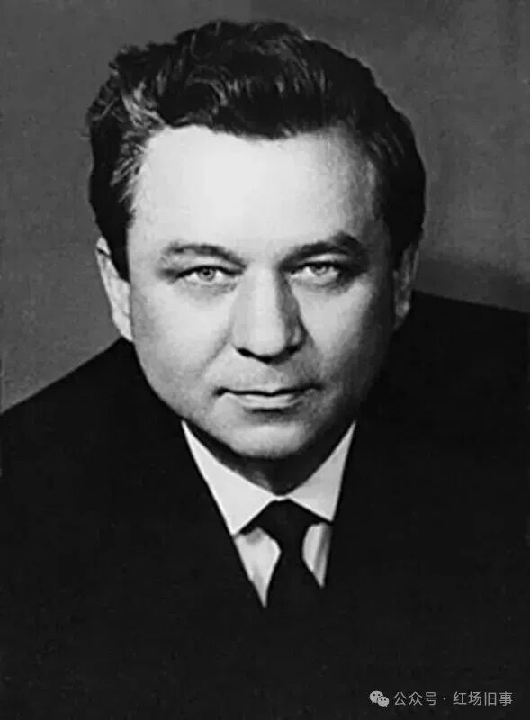
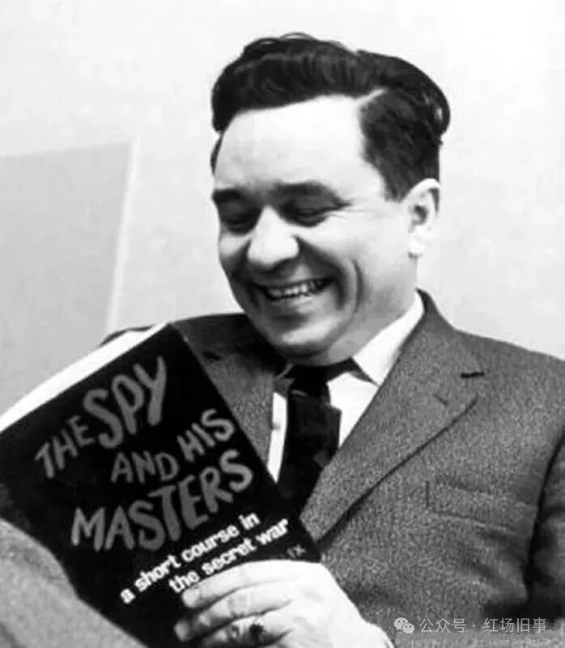
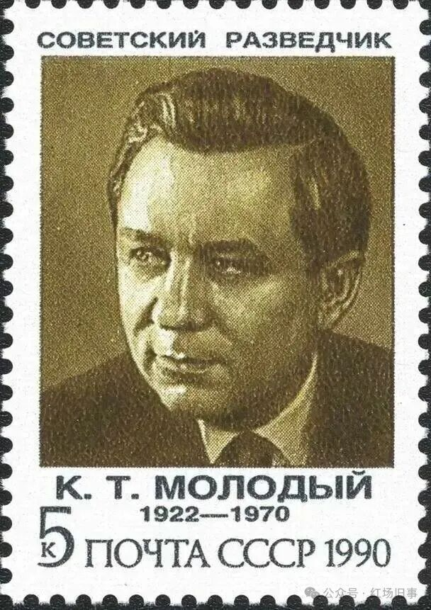

第8期 毒瘾、间谍与卫星：两个年轻人如何毁掉中情局的“天眼”
楔子：1961年伦敦，最不该暴露的人1961年1月7日，伦敦滑铁卢路老维克剧院附近。一个穿着考究的中年男人从咖啡馆出来，走向自己的白色斯蒂佩克轿车。他叫戈登·朗斯代尔。37岁，伦敦商界新星——经营点唱机和赌博机生意，拥有8辆豪车、多处房产，常年包住豪华酒店。再过几个月，他就要被女王册封为爵士。但今天，他刚走到车旁，几个便衣特工突然冲上来，把他死死按住。搜身结果让在场所有人都倒吸一口凉气：一份皇家海军最新潜艇方位测定仪的试验报告，被塞在他大衣内侧。审讯室里，他一脸无辜：“我叫朗斯代尔，加拿大人，正经商人。”

军情五处查遍所有档案，找不到任何破绽。直到一封来自美国的密电，揭开了这个“加拿大富商”的真实面目。他叫科伦·莫洛迪，苏联克格勃上校。暴露他的，是两个东西：一个波兰叛徒的举报和一张几十年前的童年手术记录。
一、10岁去美国时，没人想到日后他会成为克格勃上校
1922年，莫洛迪生于莫斯科精英家庭。7岁丧父，10岁随姨妈去美国加州，在伯克利念了5年书，练就一口纯正美式英语。1938年，16岁的莫洛迪本可留美成为公民，但他选择回国。多年后他在自传里写：“苏联需要人才，我必须回去。”卫国战争爆发后，他应征入伍，当炮兵侦察兵，经常穿越敌后抓“舌头”，精通破译密码，提供了近40个敌方炮台的准确位置。从苏联一路打到柏林城下，毫发无损。战后进入外贸学院，学习德语、法语，又攻克中文。1951年，被克格勃第一局正式招入麾下。
二、他拿着加拿大籍的护照，生活了十年没人发现
他的新身份是加拿大人戈登·阿诺德·朗斯代尔。真实的朗斯代尔1924年生，父亲是加拿大人，母亲是芬兰人。1940年苏芬战争后下落不明，护照落到了苏联手里。莫洛迪拿着这本护照，先去加拿大“熟悉故乡”：补办出生证、考驾照、加入基督教青年会，所有证件办得滴水不漏。然后他去美国，给代号“千面人”的传奇间谍阿贝尔当助手。在美国那几年，他发现投币点唱机是个新玩意儿，于是进了一批货，赚得盆满钵满。克格勃总部看得目瞪口呆：这小子是来当间谍的，还是来发财的？1954年，一纸调令把他派到英国——组建情报网，目标是英国皇家海军的核潜艇机密。
三、做生意只是副业，主业是当间谍——还倒贴钱
1955年3月3日，莫洛迪以朗斯代尔身份抵英。先在伦敦大学亚非学院“镀金”，然后商业天赋再次爆发：英国居然没有投币点唱机！他从美国大量进口，供不应求，紧接着又引进赌博机。生意越做越大，他不再满足做二道贩子，开始涉足本地实业。商业眼光毒辣到令人嫉妒，投什么赚什么。没过几年，他已跻身英国财富榜，拥有8辆顶级名车、多座豪宅。

他出手阔绰，待人热情，朋友圈里全是达官显贵。英国情报机构后来酸溜溜地写道：“他过着百万富翁的生活，那些钱都是我们英国人贡献的。”最有趣的是，他做间谍不花国家一分钱，还自掏腰包买情报，每年倒贴总部钱，成了克格勃历史上罕见的“逆向创收”特工。
四、波特兰的“鼹鼠”
莫洛迪的目标是波特兰——英格兰东南角的皇家海军基地，英国水下防务计划的核心。他需要一个能接触到核心机密的人：哈里·霍顿。霍顿16岁加入海军，参加过二战，后来在波兰大使馆工作期间，被波兰情报机构设局：一个迷人的波兰女郎接近他，带着他做黑市买卖，所有把柄都被记录在案。1950年，霍顿因酗酒被遣送回国，到波特兰海军基地当文职。他结识了档案员伊丽莎白·姬——46岁的单身女性，掌管所有核心机密文件。两人很快成了情人。1958年，一个陌生电话找到霍顿：“想知道克里斯蒂安娜（那个波兰女郎）的消息吗？”见面后，对方开门见山：提供情报，否则就把你华沙的黑历史捅出去，霍顿屈服了。莫洛迪接手后，没有用威胁那一套。他带着霍顿出入高级场所，让他享受奢靡生活，然后“消失”。等霍顿从云端跌回现实，已经无法忍受普通日子，主动找上门来。此后，霍顿和伊丽莎白每个月的第一个星期六，在滑铁卢路与莫洛迪见面交接情报。潜艇方位测定仪、核潜艇设计图、试验报告……源源不断流向莫斯科。
五、暴露竟源于一张包皮手术单和叛徒告密
1960年春天，波特兰海军基地安全官收到举报信：有人匿名写反犹传单，怀疑是霍顿干的。调查中发现，传单确实不是霍顿写的，但是他的开销严重不匹配他的收入。霍顿月薪只有710英镑，却花近10万英镑买了一栋别墅，还买了高档汽车。收入开支严重不符，伦敦警察厅开始监视霍顿。就在此时，一个更大的线索浮出水面：代号为“狙击手”的波兰军事情报局副局长戈列涅夫斯基叛逃西方，向英国提供了克格勃间谍打入波特兰的内幕。两条线索交叉印证，目标锁定为与霍顿接头的那个风度翩翩的男子——朗斯代尔。军情五处调集20多名特工，24小时轮班监控。他们在莫洛迪的办公室和公寓装了窃听器，发现他与霍顿约定“每月第一个星期六”的接头暗号。一次，莫洛迪从银行保险柜取出一个箱子，特工设法打开，发现了微型照相机和藏着密码本的特制打火机。更关键的线索来自大洋彼岸。美国联邦调查局传来一份档案：真实的戈登·朗斯代尔小时候做过割包皮手术。而眼前这个“朗斯代尔”没做过。
六、收网：一张手术记录
1961年1月7日下午3点，霍顿和伊丽莎白在滑铁卢路老维克剧院附近与莫洛迪见面。三人交换东西，正准备离开，周围突然冲出大批警察。莫洛迪身上被搜出潜艇方位测定仪的试验报告。另一队警察冲进伦敦西区鲁斯利普镇克兰利路45号，逮捕了那对“新西兰夫妇”——彼得和海伦·克罗格，他们表面经营古书店，实为苏联特工，负责把情报拍成微缩胶片发往莫斯科。五个人全部落网。审讯室里，莫洛迪一口咬定自己是加拿大商人朗斯代尔。军情五处查遍档案，愣是找不到破绽。直到FBI把那份手术记录拍在桌上——莫洛迪沉默了。一个几十年前的童年手术，成了压垮他的最后一根稻草。
尾声：英雄归国
1961年3月，莫洛迪被判处25年监禁。1964年4月22日，苏联用英国间谍格雷维尔·温恩(因在苏联卷入潘可夫斯基案被苏联政府逮捕。
第7期 他让肯尼迪看清了赫鲁晓夫的底牌——潘科夫斯基，古巴导弹危机的“隐形主角”
)把他换了回去。回到莫斯科那天，他受到英雄般的欢迎，被授予克格勃上校军衔。

1990年科伦·莫洛迪纪念邮票
1965年，他以戈登·朗斯代尔的名义出版自传《间谍：戈登·朗斯代尔的回忆》。1970年10月，他和朋友外出野餐时突发中风，年仅48岁去世。莫洛迪的死因至今存疑：真的是中风吗？你认为，他48岁突然去世，最可能的原因是？欢迎在评论区分享你的想法。下期预告 同时被希特勒和斯大林授勋的男人：“千面人”阿贝尔的传奇人生 他是克格勃最传奇的特工“千面人”，二战时潜伏纳粹内部，窃取盖世太保核心机密，同时被苏联和德国授予最高勋章——间谍史上绝无仅有。战后他潜入美国，在司法部对面开画室，操控北美间谍网。因为助手酒后弄丢一枚藏着密信的5美分硬币，硬币落入报童手中。FBI追了4年，直到助手叛变，才找到他。被捕瞬间，他在FBI眼皮底下销毁密码本、抹掉电报纸、扔掉胶片。审讯时只说了一句：“你们抓错人了。”1962年，苏联用一架U-2侦察机飞行员把他换了回去。一个骗过了两个超级大国的人，最后输给了自己人。